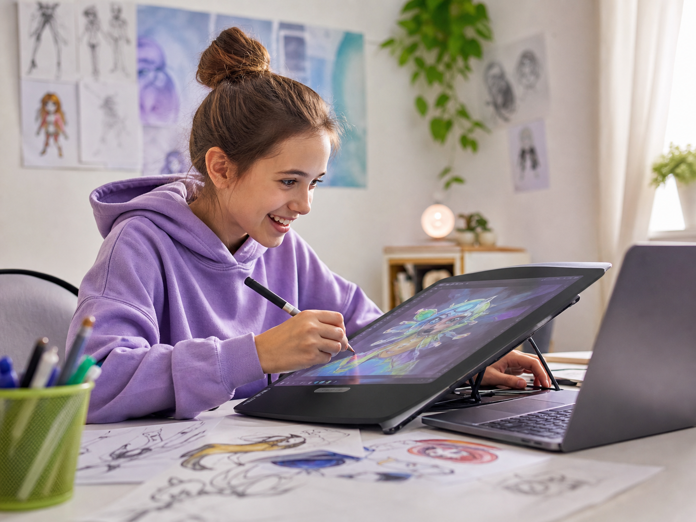
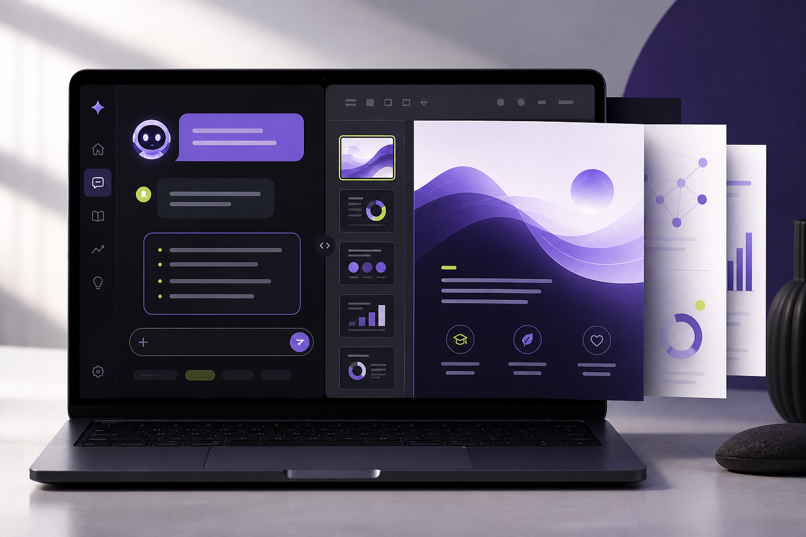
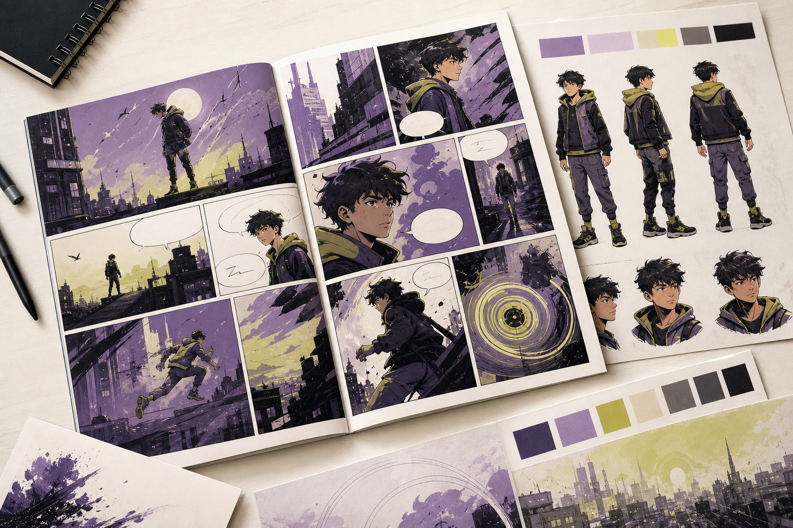
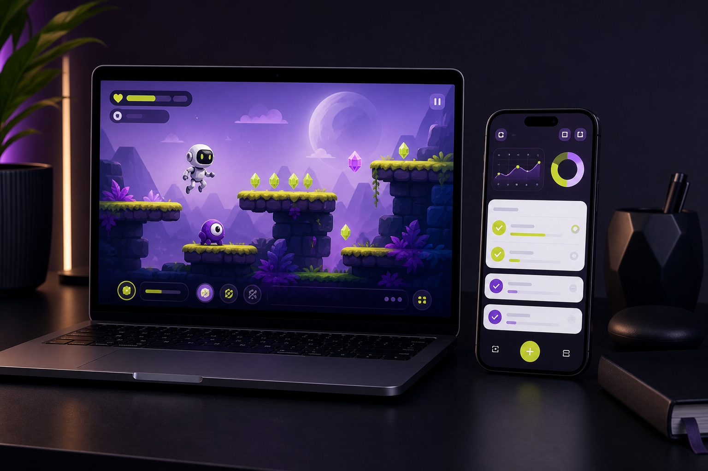

«Уроки сделал?»
«Потом»Покажем, как научить ребёнка использовать ИИ для учёбы, творчества и собственных цифровых проектов — не для копирования готовых ответов, а чтобы разбираться, придумывать, проверять и создавать самому.
Практический материал для родителей о безопасной работе с ИИ, ошибках нейросетей, списывании, личных данных и привычках, которые помогают ребёнку оставаться автором собственной работы.
«Уроки сделал?»
«Потом»«Может, запишемся на кружок?»
«Не хочу»«Что тебе вообще интересно?»
«Не знаю»Ролики, игры и лента не превращаются ни в навык, ни в собственный результат.
ИИ вроде бы помогает, но ребёнок всё меньше разбирается и думает самостоятельно.
А телефон, игры и ролики почему-то не надоедают. И теперь внутри этой цифровой среды появились нейросети.
Нейросеть помогает ребёнку думать — или незаметно начинает думать вместо него?
Нейросети могут не заменять мышление ребёнка, а усиливать его. Именно эту модель мы покажем на вебинаре 20 августа.
Покажем разницу между запросом «реши за меня» и работой с ИИ как с персональным репетитором.
Разберём, почему нейросети могут уверенно ошибаться и как формировать привычку проверять факты.
Покажем, как цифровая среда может стать местом для создания собственных проектов.

Учёба, изображения, комиксы, видео, сайты, игры, приложения — без необходимости сразу выбирать профессию.
За красивым результатом скрываются конкретные навыки: логика, выбор, проверка, доработка, проектное мышление.
Поймёте, какие правила действительно нужны и где заканчивается помощь ИИ и начинается подмена работы ребёнка.
Покажем две модели использования нейросетей и признаки, по которым родитель понимает, какая формируется у ребёнка.
На конкретном примере покажем, как ИИ может объяснять сложную тему, задавать вопросы и помогать найти ошибку.
От выбора темы и структуры до проверки источников, презентации и собственных выводов.
Персонажи, комиксы, изображения, анимация, видео — не только красивый результат, но и самостоятельные решения.
Покажем, как современные ИИ-инструменты помогают перейти от пользователя к создателю цифрового продукта.
Критическое мышление, логика, постановка задачи, проверка, работа с ошибками и умение доводить идею до результата.
Основатель одной из крупнейших школ по нейросетям в СНГ. Победитель премии GETAWARD 2026 в номинации «Обучение года».
Более 400 000 учеников прошли обучающие программы по ИИ. Приглашённый эксперт по ИИ на заседании в Государственной Думе РФ.
Не о том, как дать ребёнку ещё больше технологий, а о том, как сделать так, чтобы технологии помогали ему развиваться, оставаться самостоятельным и создавать свои результаты.
На вебинаре каждый пример покажем в двух слоях: что видит ребёнок и какой навык стоит за этим для родителя.



Ребёнок видит: можно наконец понять тему нормальным языком.
Родитель видит: ребёнок учится разбираться, задавать вопросы и исправлять ошибки.
Ребёнок видит: красивую работу, которую не стыдно показать.
Родитель видит: структуру, выбор главного, объяснение мыслей другим.
Ребёнок видит: своего персонажа и мир.
Родитель видит: работу с идеей, характером, конфликтом и последовательностью.
Ребёнок видит: игру, в которую можно играть.
Родитель видит: логику, правила, тестирование и исправление ошибок.
Ребёнок видит: настоящее приложение под свою идею.
Родитель видит: постановку задачи, прототипирование и улучшение результата.
Нейросеть создаёт черновики и ускоряет действия. Но идея, выбор, проверка и итоговое решение остаются за ребёнком.